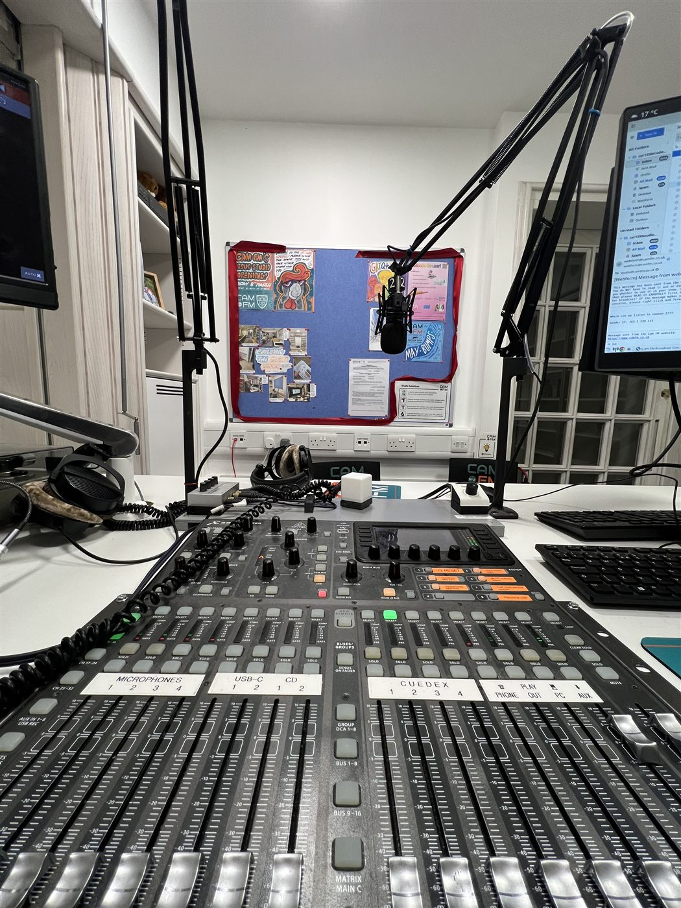
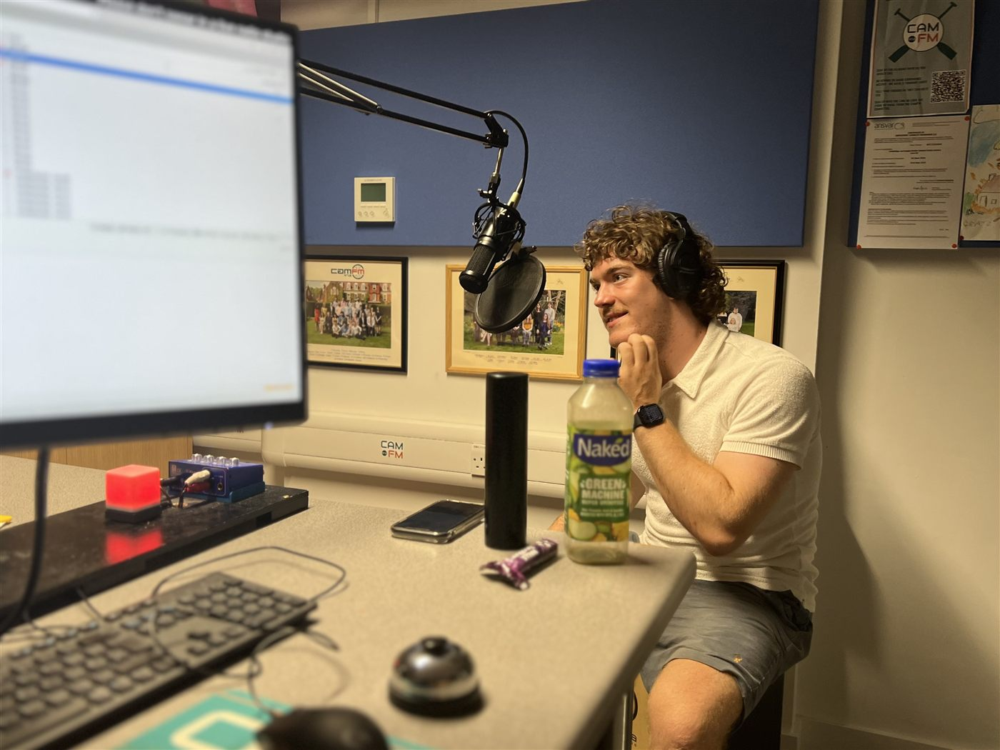
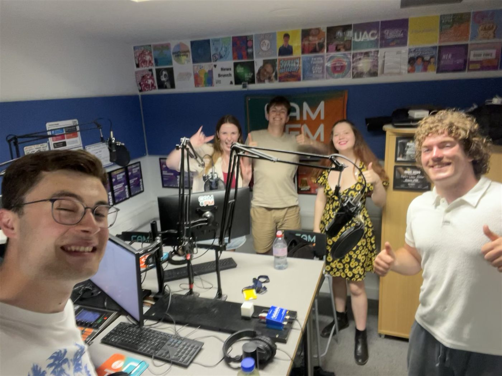

Every track, every week
Playlists
Like what you heard on the show? The playlist will be updated here each week, with links to Spotify and Apple Music playlists for you to listen along!
Where it all gets played
Every track on every playlist gets played out live from this desk — headphones on, faders up, and a studio noticeboard behind me covered in everyone else's shows too.

Live, most Tuesdays
Mid-show and mid-story — this is what "live" actually looks like from the other side of the mic, on-air light glowing away in the background.

Every playlist so far
Every track from every show, updated weekly — and every so often the studio ends up full of people who had absolutely nothing to do with that week's episode.
